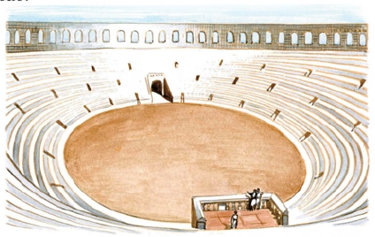

CLASSIS ROMANA
I
Ōlim cūncta maria tam īnfēsta erant praedōnibus ut nēmō nāvigāret sine maximō perīculō mortis aut servitūtis. Multī nautae et mercātōrēs, mercibus ēreptīs nāvibusque submersīs, ā praedōnibus aut interficiēbantur aut in servitūtem abdūcēbantur. Iī sōlī quī magnam pecūniam solvere potuerant servitūte līberābantur. Ipse Gāius Iūlius Caesar, cum adulēscēns ex Italiā Rhodum nāvigāret, ā praedōnibus captus est nec prius līberātus quam ingēns pretium solvit.
Nec sōlum nautae, sed etiam incolae ōrae maritimae īnsulārumque in metū erant. Nōnnūllae īnsulae ab incolīs dēsertae erant, multa oppida maritima ā praedōnibus capta. Tanta enim erat vīs et audācia eōrum ut vim Rōmānōrum contemnentēs etiam portūs Italiae oppugnārent.
Quoniam igitur propter vim atque multitūdinem praedōnum nē mare Tūscum quidem tūtum erat, parum frūmentī ex Siciliā et ex Āfricā Rōmam advehēbātur. Ita maxima inopia frūmentī facta est, quam ob rem pretium frūmentī semper crēscēbat. Postrēmō, cum iam tam cārum esset frūmentum ac pānis ut multī pauperēs inopiā cibī necessāriī perīrent, populus Rōmānus ūnō ōre postulāvit ut ūniversa classis Rōmāna adversus hostēs illōs audācissimōs mitterētur. Ergō Gnaeus Pompeius, dux ēgregius, classī praepositus est. Quī prīmum ē marī Tūscō, quod mare proximum Rōmae est, et ex Siciliā, īnsulā Italiae proximā, praedōnēs pepulit, tum eōs in Āfricam persecūtus est. Dēnique, aliquot nāvibus in Hispāniam missīs, ipse cum classe in Asiam profectus praedōnēs quōs ibi invēnit brevī tempore omnēs vīcit. Hāc victōriā ēgregiā omnēs gentēs, ab Hispānīs ūsque ad Aegyptiōs Iūdaeōsque, commūnī perīculō līberātae sunt. Simul atque grātus nūntius dē eā victōriā grātissimā Rōmam pervēnit, pretium frūmentī minuī coeptum est; victīs enim praedōnibus, nautae sine metū per maria, quae omnium gentium commūnia sunt, nāvigābant. Rōmae igitur ex summā inopiā repente maxima frūmentī cōpia facta est ac pānis tam vīlis fuit quam anteā fuerat — id quod populō Rōmānō grātissimum fuit. Pompeium victōrem cūnctus populus Rōmānus summīs laudibus affēcit.
Ex eō tempore rārō fit ut nāvis praedōnum in marī Internō appāreat, nam classēs Rōmānae, quae cūncta maria percurrunt, nāvēs mercātōriās atque ōram maritimam dīligenter tuentur. Mare Internum iterum ‘nostrum mare’ iūre appellātur ā Rōmānīs. Neque tamen classis Rōmāna omnēs nautās quī ubīque nāvigant tuērī potest. Adhūc supersunt aliquot praedōnēs maritimī, quī tantā audāciā sunt ut nē armīs quidem Rōmānōrum dēterreantur.
Amīcī nostrī in marī Tūscō nāvigantēs tālēs praedōnēs audācissimōs nāvem suam persequī arbitrantur. Cūnctī perturbātī sunt. Etsī nautae omnibus vīribus rēmigant, tamen illa nāvis, ventō secundō adiuvante, magis magisque appropinquat.
Caelum nūbilum suspiciēns gubernātor optat ut ventus in adversum vertātur. Is enim nautās suōs tam validōs esse crēdit ut nūlla alia nāvis rēmīs sōlīs ācta nāvem suam cōnsequī possit.
II
Intereā Lȳdia genua flectit et Deum precātur ut sē adiuvet: “Pater noster quī es in caelīs! Fīat voluntās tua! Sed līberā nōs ā malō!”
Mēdus autem gladium brevem, quem adhūc sub veste occultāvit, ēdūcit et “Equidem,” inquit, “nōn inermis occīdar. Sī praedōnēs mē armīs petīverint, omnibus vīribus repugnābō! Fortēs fortūna adiuvat, ut aiunt.”
Tum vērō Lȳdia “Converte gladium tuum,” inquit, “in locum suum! Omnēs enim quī cēperint gladium gladiō perībunt, ut ait Chrīstus.”
“Sed tē quoque,” inquit Mēdus, “gladiō meō dēfendam. Nōlō tē ā praedōnibus occīdī spectāre inermis. Dōnec ego vīvam, nēmō tibi nocēbit!”
Sed Lȳdia, quae Mēdum ut fūrem contemnit, “Nōn ā tē,” inquit, “sed ā Deō auxilium petō. Is sōlus nōs tuērī potest.”
Item gubernātor multīs verbīs Mēdō dissuādēre cōnātur nē gladium ēdūcat neu praedōnibus vī et armīs resistat: “Quid opus est armīs? Tanta est vīs praedōnum ut nūllō modō iīs resistere possīmus. Neque praedōnēs nautās inermēs occīdunt, cum eōs magnō pretiō servōs vēndere possint.”
Mēdus: “Iamne oblītus es quid modo dīxerīs? Dīxistī enim ‘tē mortem servitūtī praeferre’.”
Gubernātor: “Haud sciō an ego ita dīxerim, sed profectō lībertās mihi vītā cārior est. Nihil lībertātī praeferō. Quam ob rem omnem pecūniam meam praedōnibus dabō, sī lībertātem mihi reddent. Hanc grātiam sōlam ab iīs petam.”
Mēdus: “Certē praedōnēs pecūniam tibi ēripient, sed fēlīx eris sī pecūniae grātiā vītae tuae parcent.”
Gubernātor: “Sī necesse erit, decem mīlia sēstertium praedōnibus offerre possum. Quod ipse nōn possideō — amīcī meī prō mē solvent.”
Mēdus: "Ergō nūlla spēs est mihi, quī nec ipse pecūniam habeō nec amīcum tam pecūniōsum ut mē ē servitūte redimere possit aut velit."
Tum mercātor "Mihi quidem," inquit, "multī sunt amīcī pecūniōsī, sed valdē dubitō num pecūniā suā mē redimere velint. Fortūnā adversā amīcīs fīdendum nōn est! Namque amīcī, quōs in rēbus secundīs multōs habēre vidēmur, temporibus adversīs nōbīs dēsunt. Duōs versūs reminīscor ē carmine quod dē hāc rē scrīpsit poēta quīdam:
Dōnec eris fēlīx, multōs numerābis amīcōs.
Tempora sī fuerint nūbila, sōlus eris!”
Gubernātor: “Nesciō quī poēta ista scrīpserit. Tūne nōmen eius meministī?”
Mercātor: “Illōs versūs scrīpsit Ovidius, poēta ēgregius, nisi memoria mē fallit. Quī ipse, cum fortūnā adversā premerētur, ab amīcīs suīs dēsertus erat.”
Gubernātor: “Nōn vērum est quod dīxit Ovidius. Nam etsī rāra est vēra amīcitia ac fidēs, nōn omnēs amīcī sunt falsī seu īnfīdī. Multō melius Ennius poēta:
Amīcus certus in rē incertā cernitur.
Certus ac vērus amīcus est quī numquam amīcō suō deest, seu secunda seu adversa fortūna est. Mihi vērō multī sunt tālēs amīcī, quī semper mihi aderunt in rēbus adversīs, seu pecūniā seu aliā rē mihi opus erit. Ipse enim saepe amīcīs meīs affuī, nēmō amīcus umquam frūstrā auxilium ā mē petīvit. Ergō omnēs mihi grātī sunt prō beneficiīs.”
Mercātor: “Aliud est grātiam habēre, aliud grātiam referre. Nōn omnēs quī tibi prō beneficiīs grātiās agunt, ipsī posteā, sī opus fuerit, grātiam tibi referent. Facile est grātiās agere prō beneficiīs, nec vērō quidquam difficilius esse vidētur quam beneficiōrum meminisse.”
Gubernātor: “Sed ego ipse soleō amīcīs meīs grātiam referre. Numquam beneficiī oblītus sum, semper pecūniam acceptam reddidī.”
Hīc Mēdus “Ergō,” inquit, “melior es amīcus quam ille quem ego aliquandō ē servitūte redēmī.”
III
Gubernātor: “Mīror unde pecūniam sūmpserīs ut aliōs redimerēs, cum tē ipse redimere nōn possīs.”
Lȳdia: “Ego mīror cūr id mihi nōn nārrāverīs.”
Mēdus: “Nihil cuiquam nārrāvī dē eā rē, nē quis mē glōriōsum exīstimāret. Sed quoniam omnēs mē quasi servum scelestum contemnitis, nārrābō vōbīs breviter quōmodo amīcum ē servitūte redēmerim atque ipse ob eam grātiam servus factus sim:
“Cum homō līber Athēnīs vīverem, ā quōdam amīcō epistulam accēpī quā ille mihi nūntiāvit ‘sē ā pīrātīs captum esse’ ac mē per amīcitiam nostram ōrāvit ut sē ē servitūte redimerem magnum pretium solvendō. Cum autem tantum pecūniae nōn habērem, necesse fuit pecūniam mūtuam sūmere. Ergō virum dīvitem adiī, quī mihi omnem pecūniam mūtuam dedit hāc condiciōne ut annō post ad certam diem omnia sibi redderentur. Pecūniā solūtā, amīcus meus ā pīrātīs līberātus grātiās mihi ēgit prō beneficiō, ac simul mihi prōmīsit ‘sē intrā annum omnem pecūniam redditūrum esse’ — sed annō post nē assem quidem ab eō accēperam! Diē ad solvendum cōnstitūtā, cum pecūniam dēbitam solvere nōn possem, homō ille dīves mē in carcerem mīsit et aliquot diēbus post servum vēndidit. — Sed nesciō cūr hoc vōbīs nārrāverim, nec enim sine maximō dolōre eius temporis reminīscor cum in patriā līber inter cīvēs līberōs versārer. Utinam aliquandō līber patriam videam! Sed frūstrā hoc optō, nam iam illī pīrātae eam spem mihi ēripient, idque eōdem diē quō ab amīcā meā dēsertus sum!” Hoc dīcēns Mēdus ānulum quem Lȳdia abicere voluit prae sē fert.
Gubernātor: “Nē dēspērāverīs! Fortasse ānulō istō aureō tē redimere poteris. Namque avārī atque aurī cupidī sunt omnēs pīrātae. Magna est vīs aurī.”
Mēdus ānulum parvum aspiciēns “Putāsne,” inquit, “mē tam parvī aestimārī ā pīrātīs?”
Gubernātor: “Nōn omnēs hominēs parī pretiō aestimantur. Scīsne quantum pīrātae ā Iūliō Caesare captō postulāverint? Vīgintī talenta postulāvērunt, id est prope quīngenta mīlia sēstertium. At Caesar, vir superbus, cum id parum esse cēnsēret, quīnquāgintā talenta pīrātīs obtulit, simul vērō supplicium iīs minātus est! Tum praedōnibus quasi servīs suīs imperāvit ut tacērent neu somnum suum turbārent — ita Caesar praedōnēs contemnēbat, cum in eōrum potestāte esset. Ubi prīmum redēmptus est, ipse nāvēs armāvit et captōs praedōnēs in crucem tollī iussit.”
Mēdus: “Nōn sum tam superbus ut mē cum Caesare comparandum esse putem. Utinam nē pīrātae mē ut servum fugitīvum occīdant! Vērum hōc ānulō sī quis servārī potest, nōn ego, sed amīca mea servanda est. Ecce ānulum reddō tibi, Lȳdia. Nē eum abiēcerīs! Utinam ille ānulus vītam tuam servet!”
Lȳdia ānulum oblātum accipit et “Grātiās tibi agō,” inquit, “sed quōmodo tua vīta servābitur?”
“Id nōn cūrō,” inquit Mēdus, “nec enim mortem metuō, sī tē salvam esse sciō.”
Tum Lȳdia “Ō Mēde!” inquit. “Nunc dēmum intellegō mē tibi vītā cāriōrem esse. Ignōsce mihi quod tē accūsāvī! Omnia meā grātiā fēcistī. Quōmodo tibi grātiam referam?”
Mēdus: “Nihil rogō, nisi ut mē amēs ita ut mē amābās. Hōc nihil grātius mihi fierī potest.”
Lȳdia nihil respondet, sed Mēdum complectitur atque ōsculātur. Quid verbīs opus est?
Intereā gubernātor in mare prōspicit et “Quid hoc?” inquit. “Aliae nāvēs illam sequuntur. Tot nāvēs praedōnēs nōn habent. Nāvēs longae sunt, quae mare percurrunt, ut nōs ā pīrātīs tueantur. Nē timuerītis, amīcī!”
Mercātor: “Sed cūr illae nōs persequuntur?”
Gubernātor: “Quia tamquam praedōnēs ab iīs fugimus. Rēmōs tollite, nautae!”
Nautae statim rēmigāre dēsistunt ac rēmīs sublātīs nāvēs longās salūtant. Classis celeriter appropinquat. Iam mīlitēs armātī in nāve proximā cernuntur. Lȳdia magnā cum laetitiā classem appropinquantem spectat, sed Mēdus etiamnunc perterritus esse vidētur.
“Nōnne laetāris, Mēde,” inquit Lȳdia, “quod nōs omnēs ē commūnī perīculō servātī sumus?”
Mēdus: “Laetor sānē quod vōs servātī estis; sed ego mīlitēs aequē timeō atque pīrātās. Nē oblīta sīs mē servum fugitīvum esse. Timeō nē mīlitēs mē captum Rōmam abdūcant, ut cōram populō ad bēstiās mittar in amphitheātrō. Hoc dominus mihi minārī solēbat.”
“Nē timuerīs!” inquit Lȳdia. “Mīlitēs ignōrant quī homō sīs et quid anteā fēcerīs. Iam nēmō nōs prohibēbit simul in patriam nostram commūnem redīre.”
Intereā nāvēs longae tam prope vēnērunt ut mīlitēs cognōscant nāvem mercātōriam esse. Itaque persequī dēsistunt atque cursum ad orientem flectunt. Brevī cūncta classis ē cōnspectū abit.
— Hīc amīcōs nostrōs in mediō cursū relinquimus. Utinam salvī in Graeciam perveniant! Omnia bona iīs optāmus.

* * *
GRAMMATICA LATINA
Coniūnctīvus. Tempus perfectum
Āctīvum:
Iūlius dubitat num magister Mārcum laudāverit.
‘Laudāverit’ est coniūnctīvus temporis praeteritī perfectī. Coniūnctīvus perfectī dēsinit in -erit (pers. III sing.), quod ad īnfīnītīvum perfectī sine -isse adicitur.
Exempla: [1] recitāv|erit; [2] pāru|erit; [3] scrīps|erit; [4] audīv|erit.
Pater fīlium interrogat ‘num bonus discipulus fuerit: num magistrō pāruerit, attentē audīverit, rēctē scrīpserit et pulchrē recitāverit.’
Pater: “Audīsne? Interrogō tē ‘num bonus discipulus fuerīs, num magistrō pāruerīs, attentē audīverīs, rēctē scrīpserīs et pulchrē recitāverīs’.” Fīlius: “Iam tibi dīxī ‘mē industrium fuisse.’ Quārē igitur mē interrogās ‘num bonus discipulus fuerim, num magistrō pāruerim, attentē audīverim, rēctē scrīpserim et pulchrē recitāverim’? Crēde mihi! Nē dubitāverīs dē verbīs meīs!”
Parentēs fīliōs interrogant ‘num bonī discipulī fuerint: num magistrō pāruerint, attentē audīverint, rēctē scrīpserint et pulchrē recitāverint.’
Parentēs: “Audītisne? Interrogāmus vōs ‘num bonī discipulī fuerītis, num magistrō pāruerītis, attentē audīverītis, rēctē scrīpserītis et pulchrē recitāverītis’.” Fīlius: “Iam vōbīs dīximus ‘nōs industriōs fuisse.’ Quārē igitur nōs interrogātis ‘num bonī discipulī fuerīmus, num magistrō pāruerīmus, attentē audīverīmus, rēctē scrīpserīmus et pulchrē recitāverīmus’? Crēdite nōbīs! Nē dubitāverītis dē verbīs nostrīs!”
Sing. Plūr.
Pers. 1 -erim -erīmus
Pers. 2 -erīs -erītis
Pers. 3 -erit -erint
Passīvum:
Pater dubitat num fīlius ā magistrō laudātus sit.
Pater: “Tūne ā magistrō laudātus es?” Fīlius: “Nesciō num laudātus sim!” Pater: “Quōmodo nescīs num laudātus sīs ā magistrō?” Fīlius: “Nesciō quid ab eō dictum sit, nam in lūdō dormīvī!”
Pater dubitat num fīliī ā magistrō laudātī sint.
Pater: “Vōsne ā magistrō laudātī estis?” Fīliī: “Nescīmus num laudātī sīmus!” Pater: “Quīmodo nescītis num laudātī sītis?” Fīliī: “Nescīmus quid magister dīxerit, nam in lūdō dormīvimus!”
Sing. Plūr.
Pers. 1 laudātus sim laudātī sīmus
Pers. 2 laudātus sīs laudātī sītis
Pers. 3 laudātus sit laudātī sint
* * *
AD CAPITVLVM